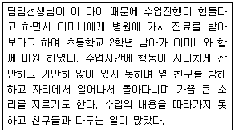
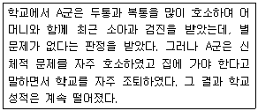
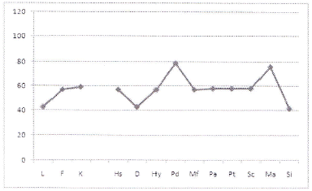
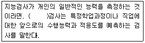
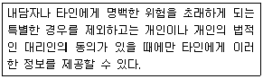
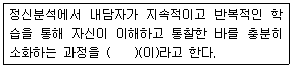
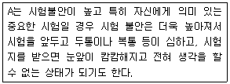

임상심리사-2급 (2008-05-11 기출문제)
1과목: 심리학개론
1. 다음 중 기억정보의 처리과정으로 옳은 것은?
- 부호화→저장→인 출
- 저 장→인출→부호화
- 저 장→부호화→인출
- 부호화→인출→저장
(정답률: 83%)

2. 대상영속성 개념 이 획 득되는 인지 발달 단계는?
- 감각운동 단계
- 전조작적 단계
- 구체적 조작 단계
- 형식적 조작 단계
(정답률: 76%)
3. 자전거 기록 경주에서 혼자 달릴 때 보다 다른 사람이 옆에서 달릴 때 기록이 더 빨라지는 경 향을 무엇이라고 하는가?
- 동조
- 사회적 촉진
- 사회적 태만
- 순종
(정답률: 96%)
4. Erikson의 발달 단계에서 마지 막 8단 계에 해 당되는 노년기를 특징지우는 위기 혹은 해결해야 되는 과제는?
- 친밀감 대 고립감
- 통합감 대 절망감
- 생산감과 자기 몰입
- 근면감 대 열등감
(정답률: 86%)
5. 인간 발달의 일 반적 인 원 리에 해당하지 않는 것은?
- 전 생애에 걸쳐 이루어지는 변화 과정을 포함한다.
- 각 발달 단계마다 발달 과업 또는 사회적 기대가 있다.
- 사지 부분이 먼저 발달하고, 머리와 몸통 부분이 나중에 발달한다.
- 발달에는 결정적 시기 또는 민감기가 있다.
(정답률: 97%)
6. 다음 중 동조현상이 가장 적게 발생하는 상황은?
- 타인에게 자신이 잘 모르던 정보를 제공받는 경우
- 개인의 주관이나 확신이 강한 경우
- 다수의 인정을 받으려는 동기가 높은 경우
- 이탈에 대한 집 단압력 이 부담스러운 경우
(정답률: 91%)
7. 다음 중 현상학적 성격이론에 대한 설명으로 틀린 것은?
- 사상 자체가 행동을 결정하는 것이 아니라 개인의 주관적 경험이 행동을 결정 한다.
- 각 개인은 세계를 달리 경 험하는 방식 을 강조하기 때문에 개인의 행동을 예측하고 이해하기 위해서는 개인의 지각을 이해해야 한다.
- 상황을 객관적으로 측정하거나 어린 시절의 동기룰 분석하기 보다는 앞으로 무엇이 발생할 것인가에 초점을 둔다.
- 개인의 성 장방향과 선 택 의 자유를 강조하는 인본주의적 입장과 주관적 세계와 자기실 현의 추구를 강조하는 자기이론적 입장을 포함한다.
(정답률: 78%)
8. 어떤 신입지원자의 단정한 외모를 좋게 본 면접관이 그지원자가 예의 바르고, 성격이 좋으며, 능력도 뛰어날 것이라고 추론하여 좋은 점수롤 준다면 이는 어떤 이유 때문인가?
- 후광효과
- 최신 효과
- 상호성 원 리
- 잠복효과
(정답률: 95%)
9. Catt이의 성격 이론에 대한 설명으로 틀린 것은?
- 성 격 요인 을 규명 하는데 요인분석 을 주로 사용하였다.
- 지능을 성격의 한 요인인 능력특질로 보았다.
- 개인의 특정적 행동을 설명할 수 있느냐를 근거로 표면특질과 근원특질로 구분하였다.
- 성격을 구성하는 행위와 성향들이 서열적으로 조직화되어 있다고 본다.
(정답률: 50%)
10. 아동기에서 성 인기로 옮겨가는 청 소년기는 사춘기로 시작 된다. 이 때 나타나는 발달 특성으로 틀린 것은?
- 각 신체변화의 비율이 완만한 성장을 보인다.
- 동성 및 이성의 친구를 선택 한다.
- 성인이 되는 과정으로 많은 심리 사회적 압력이 작용한다.
- 2차적 인 성 특징들이 발달된 다.
(정답률: 80%)
11. “IB-MKB-SMB-C5.1-66.2-9” 라는 배열을 외우기는 힘들지만 이것을 ‘1BM-KBS- MBC-5.1-66.2-9”라는 배열로 재구성하면 외우기가 쉽다. 이와 같이 정보를 재부호화하여 하나로 묶는 것은?
- 암송
- 부호화
- 청킹
- 활동기억
(정답률: 77%)
12. 엘리베이터에서 심하게 폭행을 당했던 초등학교 3학년 A는 혼자서도 재미있게 탔던 수직 상승, 하강하는 놀이기구를 무서워서 타지 못하게 되었다. A의 행동변화를 설명하는 개념으로 가장 적합한 것은?
- 조작적 조건형성
- 조건자극의 일반화
- 학습된 무기력
- 이차 조건형성
(정답률: 65%)
13. 다음 중 망각의 원인에 대한 설명으로 틀린 것은?
- 분명히 읽었던 정보를 기억할 수 었는 원인은 비효율적인 부호화 때문이라고 할 수 있다.
- 소멸 이론에서 망각은 정 보간의 간섭 때문이라고 주장한다.
- 새로운 학습이 이전의 학습을 간섭하기 때문에 망각이 일어나는 것을 역행성 간섭 이라고 한다.
- 망각을 인출실패로 간주하는 주장도 있다.
(정답률: 22%)
14. 당신은 비행기 여행에 대해 상당한 두려움을 가지고 있는 환자를 면담하게 되었다. 당신이 정신분석적 입장을 취하는사람이라면 이 환자가 가지는 두려움의 원인을 어디에서 찾겠는가?
- 두려운 느낌을 갖게 만드는 무의식적 갈등의 전이
- 어린 시절 사랑하는 부모에게 닥친 비행기 사고의 경험
- 비행기의 추락 등 비행기 관련 요소들의 통제 불가능성
- 자율신경계 등 생리적 활동의 이상
(정답률: 93%)
15. 1964년 뉴욕의 주택 가에서 젊 은 여인이 살인극을 당했는데 이 여인이 살인을 당하기 전에 매우 큰 목소리로 도움을 청했으나 그 근처에 살던 30여 가구 중 아무도 그녀를 구하려하지 않았고 경 찰을 부르지도 않았다. 이 러한 상황이 발생 한 가장 큰 원인은?
- 상황의 위기에 대한 판단이 불분명하기 때문
- 책임감이 분산되기 때문
- 다른 사람들의 행동에 동조하기 때문
- 피해자가 나와 직접적 으로 관련이 없기 때문
(정답률: 80%)
16. 다음 중 성격의 정의에 관한 설명으로 틀린 것은?
- 성격에는 개인이 가지고 있는 고유하고 독특한 성질이 포함된다.
- 개인의 독특성은 시간이 지나도 비교적 안정적으로 변함없이 일관성을 지닌다.
- 성격은 다른 사람이나 환경과 상호 작용하는 관계에서 행동양식 을 통해 드러 난다.
- 성격은 타고난 것으로 개인이 속한 가정과 사회적 환경에 영향을 받지 않는다.
(정답률: 96%)
17. 다음 중 단기기억에 관한 설명으로 옳은 것은?
- 단기기억 은 저장시간이 제한적이다.
- 단기기억 의 용량은 제한이 없다.
- 단기기억 의 정보는 단절적 인 주사를 통해 인출해낸 다.
- MiIIer에 따르면 단기기억 의 용량은 5±2개 항목이 다.
(정답률: 89%)
18. 다음 중 표본조사에 관한 설 명으로 틀린 것은?
- 연구자가 모집 단의 모든 성원을 조사할 수 없을 때 표본을 추출한다.
- 표본에 추출된 모집 단의 특성을 일 반화하기 위해서는 표본은 모집 단의 부분집 합이어야 한다.
- 표본의 특성 을 모집 단에 일 반화하기 위해서 무선 표집을 사용한다.
- 표본추출에서의 우연적 실수는 표본의 크기가 작으면 작을수록 적어진다.
(정답률: 74%)
19. 다음 중 연구설계에 관한 설명으로 옳은 것은?
- 실험자에 의해 조작되는 변인을 종속변인이라고 한다.
- 실헙자의 조작에 의한 피험자의 반응을 독립변인이라고 한다.
- 한 사람에게 집중적으로 조사하여 결론을 얻는 연구 방법을 사례연구라고 한다.
- 관찰연구에서는 연구자가 의도한 결과를 생 성시키기 위한 처치가 개입된다.
(정답률: 52%)
20. 다음 중 척도에 관한 설명으로 틀린 것은?
- 범주척도는 서열척도보다 더 많은 정보를 가지고 있다.
- 일정 간격을 동일 단위로 취급하는 척도를 등간척도라고 한다.
- 비율척도로 측정한 값은 곱하고 나눈 결과가 그 배수만큼 의미가 있다.
- 순서 척도화된 점수는 원 칙적으로 가산하거나 감산할 수 없다.
(정답률: 45%)
2과목: 이상심리학
21. 4세 아동 A는 어머니와 얘정적 관계를 형성하지 못하며, 장난감을 가지고 노는 데는 흥미가 없고 사물을 일렬로 배열하거나 자신의 몸을 앞뒤로 흔들면서 알 수 없는 말을 한다. 아동 A에 게 진 단할 수 있는 가장 가능성 이 높은 장애는?
- 자폐성 장애
- 정신지체
- 틱 장애
- 학습장애
(정답률: 94%)
22. 다음 중 치매의 진단적 특징이 아닌 것은?
- 기억 장해
- 언어기능장해
- 의식장해
- 실행장해
(정답률: 56%)
23. 다음 중 성격장애의 하위유형들을 변별 진단하기 위한 기준으로 틀린 것은?
- 편집성 성격장애는 타인에 대한 불신과 냉소의 특징을 보인다.
- 분열성 성격장애에서는 타인에 대한 관심이 없어 대인 관계롤 피한다.
- 회피성 성격장애에서는 타인에 대한 관심 은 있으나 거절당하는 것이 두려워 대인관계를 피한다.
- 강박성 성격장애에서는 규칙과 생산성에 대해 집착함으로써 일에 높은 성과를 보인다.
(정답률: 61%)
24. 다음의 환자에게 가능한 진다명은?

- 전반적 발달 장애
- 품행 장애
- 적대적 반항장애
- 주의력 결핍 및 과잉행동 장애
(정답률: 72%)
25. 다음은 어떤 장애 인가?

- 선택적 함구증
- 반응성 액착장애
- 분리불안 장애
- 상동증적 운동장애
(정답률: 84%)
26. DSM-IV에서 A군에 해당하는 성격장애는?
- 히스테리 성격장애
- 의존성 성격장애
- 편집성 성격장애
- 강박성 성격장애
(정답률: 83%)
27. 운동성 틱과 현재 하나 이상의 음성 틱을 가지고 있거나 과거로부터 있어 온 장애를 무엇이라고 하는가?
- 레트장애
- 뚜렛장애
- 이식증
- 아스퍼거 장애
(정답률: 82%)
28. A씨는 친구가 많지 않으며, 본인도 친구를 많이 사귀고 싶어하지 않는다. 그는 다른 사람들에 관해 무관심하며 고독을 즐긴다. A씨가 보이는 행동은 어떤 성격장애에서 특징적으로 나타나는가?
- 자기도취형 성격장애
- 회피성 성격장애
- 분열성 성격장애
- 강박성 성격장애
(정답률: 50%)
29. 다음 중 사회공포증의 증상이 아닌 것은?
- 당황할 가능성이 있는 사회적 상황에 대한 공포
- 백화점, 영화관 등 넓은 공간에 대한 지속적 공포
- 자신의 공포가 과도하고 비합리적임을 인식
- 두려워 하는 사회적 상황을 회피
(정답률: 75%)
30. 양극성 장애와 주요 우울장애의 비교설명으로 옳은 것은?
- 주요 우울장애와 양극성 장애의 발생률은 비슷하다.
- 주요 우울장애는 여자가 남자보다, 양극성 장애는 남자가 여자보다 높은 발병률을 보인다.
- 주요 우울장애는 사회경제적으로 낮은 계층에서 발생비율이 높고, 양극성 장애는 높은 계층에서 더 많이 발견된다.
- 주요 우울쟁애 환자는 성격적으로 자아가 약하고 의존적이며, 강박적인 사고를 보이는 경우가 많은데 비해, 양극성 장애의 경우에는 병전 성격이 히스테리성 성격장애의 특징을 보인다.
(정답률: 75%)
31. 경계선 성격장애의 진단 기준이 아닌 것은?
- 관계망상적 사고
- 정체성 혼란
- 자살시늉 또는 자살행동
- 불안정한 대인관계
(정답률: 47%)
32. 전쟁 포로로 잡혀 있다가 풀려난 사람이 종전 후 총소리에 극심하게 불안증상을 느낄 때 가장 가능성이 높은 장애는?
- 자폐증
- 외상 후 스트레스 장애
- 정신불열증
- 청각장애
(정답률: 87%)
33. 정신불열증의 하위유형에 대한 설명으로 틀린 것은?
- 혼란형 정신분열증 환자는 신조어를 만들거나 바보같은 표정으로 웃음을 터뜨린다.
- 망상형 정신분열증 환자는 흥분되어 있으며, 분노에 차있고 간혹 폭력적이 된다.
- 혼란형 정신분열증 환자는 극단적인 형태의 운동정지로 운동이 수동적이 되며 반복적인 언행을 보이기도 한다.
- 망상형 정신불열증 환자는 잔신의 능력을 과대평가하기도 하고 남을 의심하고 모든 일에 자신을 연관시켜 생각하기도 한다.
(정답률: 41%)
34. 다음 중 물질의존에 대한 설명으로 틀린 것은?
- 내성이 나타난다.
- 금단증상이 나타난다.
- 물질사용을 중단하거나 조절하려고 해도 뜻대로 되지 않는다.
- 물질사요으로 인하여 신체적, 정신적 문제가 생기면 사용을 중지한다.
(정답률: 83%)
35. 다음 중 범불안장애 환자가 나타내는 불안의 특징은?
- 특정 대상에 대한 과도한 불안
- 발작경험에 대한 예기불안
- 불안의 대상이 분명하지 않은 부동불안
- 반복적으로 침투하는 특정 사건에 대한 염려
(정답률: 83%)
36. 우울증의 원인이 되는 우울 유발적 귀인 현상에 대한 설명으로 옳은 것은?
- 성공원인을 외부적, 안정적, 특수적 요인에 귀인한다.
- 성공원인을 내부적, 안정적, 특수적 요인에 귀인한다.
- 실패원인을 외부적, 안정적, 특수적 요인에 귀인한다.
- 실패원인을 내부적, 안정적, 전반적 요인에 귀인한다.
(정답률: 78%)
37. 다음 중 정신분열증 환자들이 나타내는 양성증상에 해당되는 것은?
- 정서적 둔마
- 와해된 언어
- 의욕의 저하
- 언어의 빈곤
(정답률: 81%)
38. 다음 중 인지적 이론의 주요 특징이 아닌 것은?
- 협력적 경험주의
- 소크라테스식 대화법
- 안내된 발견
- 조형
(정답률: 54%)
39. 해리성 정체감 장애와 특징이 아닌 것은?
- 지배적 성격에서는 다른 성격으로 있었던 기간에 대한 기억상실을 호소한다.
- 이 장애를 보이는 사람은 흔히 어렸을 때 신체적으로나 성적으로 학대받은 경험이 있다.
- 심한 혼란으로 정신과적인 치료를 받은 경험을 갖고 있다.
- 최면에 잘 걸리지 않는 성격을 보인다.
(정답률: 69%)
40. 다음 중 성기능장애에 해당되지 않는 것은?
- 조루증
- 남성 발기장애
- 성욕감퇴장애
- 성정체감 장애
(정답률: 88%)
3과목: 심리검사
41. 다음 중 발달검사의 특징으로 옳은 것은?
- 아동을 직접 검사하지 않고 보호자의 보고에 의존하는 발달검사도구도 있다.
- 발달검사의 목적은 유아의 지적능력을 알아보기 위한 것이다.
- 영유아 기준 발달상 미숙한 단계이므로 다양한 영역을 측정하기 어렵다.
- 발달 검사는 주로 언어이해 및 표현능력으로 구성되어 있다.
(정답률: 87%)
42. 다음 중 베일리 검사에 대한 설명으로 틀린 것은?
- Mental Scale, Motor Scale, Behavior Rating Scale로 구성되어 있다.
- BSID-∥에서는 대상 연령이 1개월에서 42개월 까지 확대되었다.
- 규준자료를 제시하고 있다.
- 전 생애에 걸친 발달 과정을 평가할 수 있다.
(정답률: 87%)
43. K-WAIS검사에서 동작성 검사의 측정내용이 아닌 것은?
- 숫자 외우기
- 빠진 곳 찾기
- 차례 맞추가
- 토막 짜기
(정답률: 83%)
44. 지능에 관한 일반적인 정의로 적합하지 않은 것은?
- 지능이란 학습능력이다.
- 지능이란 적응력이다.
- 지능은 총합적ㆍ전체적 능력이다.
- 지능이란 단순한 사고능력이다.
(정답률: 76%)
45. 표준화된 검사가 다른 검사에 비하여 객관적인 해석을 가능하게 해주는 이유는?
- 타당도가 높기 때문이다.
- 규준이 마련되어 있기 때문이다.
- 신뢰도가 높기 때문이다.
- 실시가 용이하기 때문이다.
(정답률: 75%)
46. 다음 중 표집시 남녀 비율을 정해놓고 표집하는 방법은?
- 유층표집
- 군집표집
- 체계적 표집
- 단순무선표집
(정답률: 57%)
47. 다음 중 구성능력을 평가하는데 적절한 신경심리검사는?
- 추적검사
- Boston실어증 검사
- Rey 복잡도형검사
- 위스콘신 카드검사
(정답률: 67%)
48. 로샤 검사에 대한 설명으로 틀린 것은?
- 좌우 대칭의 잉크 반점이 나타난 10장의 card를 이용한 검사이다.
- 모호한 자극 특성을 이용한 투사법 검사이다.
- 자유로운 연상과 반응을 위해 card는 임의의 순서로 제시하는 것이 좋다.
- 반응시, 카드를 돌려 보아도(회전) 무방하다.
(정답률: 72%)
49. 다음의 MMPI 프로파일에 대한 해석적 가정으로 잘못된 것은?

- 수동-공격적 V프로파일로 볼 수 있다.
- 행동화적 문제를 나타낼 가능성이 매우 높다.
- 비순응적이고 반사회적 경향이 높다고 할 수 있다.
- 대인관계가 피상적이고 이기적일 가능성이 높다.
(정답률: 60%)
50. 다음 ( )안에 알맞은 것은?

- 창의성 검사
- 성취도 검사
- 적성검사
- 발달검사
(정답률: 84%)
51. 다음 중 카우프만 아동용지능검사(K-ABC)에 관한 설명으로 틀린 것은?
- 정보처리적인 이론적 관점에서 제작되었다.
- 성취도를 평가할 수도 있다.
- 언어적 기술에 덜 의존하므로 언어능력의 문제가 있는 아동에게 적합하다.
- 아동용 웩슬러지능검사(WISE)와 동일한 연령대의 아동을 대상으로 한다.
(정답률: 36%)
52. 심리검사의 신뢰도에 영향을 주는 요인들에 관한 설명으로 틀린 것은?
- 검사의 대상이 되는 집단의 개인차가 클수록 신뢰도 계수가 높아진다.
- 검사의 문항수가 많아지면 점수의 총점이 커지고 변량이 커져 신뢰도 계수가 높아지게 된다.
- 검사의 측정오차가 많을수록 신뢰도 계수가 과장되게 높게 추정될 가능성이 높다.
- 내적 일관성 계수는 검사-재검사 신뢰도 수치보다 높을 가능성이 있다.
(정답률: 41%)
53. HTP검사에서의 반응과 그 해석이 틀린 것은?
- 지우개를 과도하게 사용한 경우는 자신에 대한 불만과 초조함을 나타낸다.
- 용지의 왼쪽에 그림을 그리는 사람은 충동성과 외향성을 표출하는 것이다.
- 조증환자는 그림을 지나치게 크게 그릴 가능성이 있다.
- 지나치게 작은 그림은 꼼꼼하게 할 수 있다는 자신감의 표현이고 강한 자존감을 보이는 것이다.
(정답률: 92%)
54. 46PF(성격요인검사)에 관한 설명으로 틀린 것은?
- MMPI와 달리 정신질환자가 아닌 정상인의 성격을 측정하기 위해 만든 검사이다.
- 상반된 의미의 형용사를 요인분석하여 만든 검사이다.
- Cattell과 Eber가 고안한 검사로 성인은 물론 학령기를 시작하는 6세 이상을 대상으로 하고 있다.
- Cattll에 따르면 임상증상은 표면특성이고 그 배후에는 다양한 근원특성이 있다.
(정답률: 54%)
55. 심리검사의 타당도를 평가하기 위한 방법이 아닌 것은?
- 전문가를 통해 검사의 문항 내용이 검사의 목적와 얼마나 관련이 있는지 검토하게 하였다.
- 동일한 검사를 일정 시간 간격을 두고 다시 한번 실시하여 상관관계를 산출하였다.
- 이미 신뢰도와 타당도가 입증된 유사한 다른 검사를 동시에 실시하여 상관관계를 관찰하였다.
- 검사 점수들을 요인분석하여 문항들 간의 요인구조를 검토하였다.
(정답률: 35%)
56. 정신연령과 생활연령을 이용하여 지능지수를 산출할 때 발생되는 가장 큰 문제점은?
- 지능지수가 과장되기 쉽다.
- 검사 수행 시간이 너무 많이 걸린다.
- 20세 이상의 성인에게 실시할 때 과소평가된다.
- 지능의 선천적인 요인을 평가하기 어렵다.
(정답률: 64%)
57. 지능의 측정 영역 중 일반적으로 연령이 증가함에 따라 가장 크게 저하되는 것은?
- 귀남적 추리 능력
- 공간정위
- 수리능력, 지각속도
- 언어능력, 언어기억
(정답률: 82%)
58. 다면적 인성검사(MMPI)에서 F척도의 상승을 초래할 만한 원인으로 보기 어려운 것은?
- 대부분의 문항에 대해 ‘그렇다’ 혹은 ‘아니다’의 한 방향으로만 응답했을 경우
- 혼란, 망상적 사고 또는 다른 정신병력 과정을 겪고 있든 사람이 응답했을 경우
- 자신의 약점을 고의적으로 숨기려는 강한 방어적 태도로 응답했을 경우
- 고의적으로 나쁘게 보이려는 태도로 응답했을 경우
(정답률: 50%)
59. 다음 중 성취도 검사의 일종인 기초학습기능검사가 평가하기 어려운 영역은?
- 독해력
- 공간추론능력
- 계산능력
- 철자법 능력
(정답률: 59%)
60. 다면적 인성검사(MMPI)의 세 타당도 척도점수를 연결한 모양이 부적(-)기울기를 보일 때 가능한 해석은?
- 정교한 방어
- 순박하지만 개방적인 태도
- 개방적이지 못한 심리적 태세
- 방버능력의 손상
(정답률: 60%)
4과목: 임상심리학
61. 수영하기를 두려워하는 어린 딸에게 수영을 가르치기 위해 아버지가 직접 수영하는 것을 보여주었다. 이것은 행동치료의 어느 기벙에 해당되는가?
- 역조건화
- 혐오치료
- 모델링
- 체계적 둔감화
(정답률: 90%)
62. 심리적 자문에 대한 설명으로 틀린 것은?
- 인간행동의 지식과 이론을 응용하여 문제에 대한 전문적인 조언을 제공하는 것을 말한다.
- 일대일 심리치료와는 달리 심리적 자문은 큰 집단의 사람들이나 전체 조직을 대상으로 도움을 줄 수 있다.
- 효과적인 자문가가 되기 위해서는 유능한 대인관계 및 의사소통 기술이 필요하다.
- 심리치료와는 달리 심리적 자문에서는 전문가로서의 윤리적 행동은 크게 중요하지 않다.
(정답률: 92%)
63. 다음은 임상심리학자의 윤리기준 중 무엇을 의미하는가?

- 비밀보장의 원칙
- 소비자 복지의 원칙
- 공적인 진술의 원칙
- 인간피험자를 대상으로 하는 연구에서의 원칙
(정답률: 68%)
64. 체중감량을 위해 상담소를 찾은 여대생에 대한 적절한 행동관찰법은?
- 자연관찰
- 면대면 관찰
- 자기탐지 관찰
- 통제된 관찰
(정답률: 71%)
65. 자해 행동을 보이는 아동에 대한 심리평가로 가장 적합한 것은?
- 부모면접
- 자기보고형 성격검사
- 투사법 검사
- 행동평가
(정답률: 80%)
66. 다음 중 행동치료에 대한 설명으로 틀린 것은?
- 평가와 치료가 직접적으로 연관된다.
- 문제 행동의 기저 원인에 중요성을 둔다.
- 모든 사레에 동일한 기법을 적용하기보다는 개별화된 평가와 개입을 한다.
- 평가와 치료 절차가 구체적이고 분명하다.
(정답률: 64%)
67. 행동평정 척도에 관한 설명으로 맞는 것은?
- 내현적이거나 추론된 성격 측면을 평가하는데 적합하다.
- 후광효과가 작용하기 어렵다.
- 평정하고자 하는 속성을 명확하게 정의해야 한다.
- 개개 항목에 대해 극단적인 점수에 평정하는 경향이 있다.
(정답률: 70%)
68. 접수면접에서 초점을 두는 관심사가 아닌 것은?
- 환자의 요구와 임상장면에 대한 기대
- 임상장면의 특징에 대한 소개
- 치료적 동기와 대안적인 치료방법
- 환자의 정신병리에 대한 깊은 이해
(정답률: 79%)
69. 행동관찰의 잠재적인 문제에 해당되지 않는 것은?
- 관찰자의 신뢰도
- 관찰자의 개입 가능성
- 치료와의 적접적인 연관성
- 상황적 요소
(정답률: 67%)
70. 단기 역동적 심리치료에서 강조되는 것은?
- 심리 내적인 갈등
- 대인 관계적 갈등
- 잠재 증상
- 행동 증상
(정답률: 37%)
71. 임상심리학의 발전에 기여한 인물 또는 사건에 관한 연결이 올바른 것은?
- Alfred Binet- 편차형 아동지능검사 개발
- Sigmund Freud- 무의식적 갈등과 정서적 영향이 정신 질환과 신체적 질병의 원인이 될 수 있다고 가정함.
- Army Alpha- 문맹자와 언어장애자를 위한 비언어성 지능검사
- Wihelm Wundt- Pennsylvania 대학교에 심리진료소 개설
(정답률: 68%)
72. 비구조화된 면접의 특징과 거리가 먼 것은?
- 면접자가 자유롭게 질문을 하고 내담자의 자발적인 사고 흐름을 따라가는 것이다.
- 내담자로부터 포괄적인 정보를 얻어낼 수 있다.
- 면접자에게 높은 수준의 경험, 기술 및 훈련이 요구된다.
- 면접의 신뢰도와 타당도가 낮다.
(정답률: 17%)
73. 교통사고를 당한 뒤 자동차에 대한 두려움이 생겨 퇴원하지 않겠다는 30대 여자환자에 대한 적절한 자문활동이 아닌 것은?
- 체계적 둔감법을 사용하여 자동차에 대한 공포증을 치료해준다.
- 홍수법으로 자동차에 대한 공포증을 치료해준다.
- 입원하고 있는 동안 장기적 정신분석치료를 통해 성격 개조를 권한다.
- 입원을 계쏙해서 얻는 부차적 이득이 있는지 평가한다.
(정답률: 74%)
74. 내담자의 말과 행동에서 표현된 기본적인 감정, 생각 및 태도를 상담자가 다은 참신한 말로 부연해주는 것은?
- 해석
- 반영
- 직면
- 명료화
(정답률: 72%)
75. 상담에서 해석의 제시형태로 적절하지 않은 것은?
- 확정적 표현
- 점진적 진행
- 반복적 제시
- 질문형태의 제시
(정답률: 42%)
76. 다음 중 임상심리학의 역사에서 제1차 세계대전과 제2차 세계대전 사이에 두드러졌던 일반적 경향이 아닌 것은?
- 치료영역에서의 심리학자의 역할이 증대되었다.
- 심리학자에 의한 평가활동이 지속되고 확장되었다.
- 행동치료가 임상심리학의 주요 분야로 자리 잡았다.
- 직업적 정체성을 형성하기 위한 임상심리학자의 투쟁이 활발했다.
(정답률: 60%)
77. 다음 중 Boulder모델에 대한 설명으로 틀린 것은?
- 심리학박사(Psy.D)학위를 요구한다.
- 과학자-전문가 모델이라고 불리기도 한다.
- 1년간의 전문적 임상 인턴과정을 요구한다.
- 본질적으로 Shakow위원회에서 제안한 것과 일치한다.
(정답률: 56%)
78. 다음 중 접수면접의 주요 목적이 아닌 것은?
- 환자를 병원이나 진료소에 의뢰할지를 고려한다.
- 제공되는 서비스에 대한 환자의 질문에 대답한다.
- 치료자에게 신뢰, 및 희망을 심어주려고 시도한다.
- 환자가 자신이나 다른 사람을 해칠 중대한 위험상태에 있는지 결정한다.
(정답률: 50%)
79. 다음 중 반응성 효과가 적고 관찰자로 하여금 광범위한 자연 장면에서 행동을 기록할 수 있도록 해주기 때문에 생태학적 타당도를 높일 수 잇는 행동평가 방법은?
- 자기-감찰
- 참여 관찰
- 비참여 관찰
- 행동평가 면접
(정답률: 43%)
80. 다음 중 주로 인간중심의 치료과정에서 강조되는 내용으로 적합한 것은?
- 내담자에게 반복되어 나타나는 소망-방어의 탐색
- 내담자의 성장을 촉진하는 치료적 분위기 조성
- 내담자의 비합리적 사고에 대한 논리적 분석
- 치료목표를 향한 구조적, 지시적 접근
(정답률: 80%)
5과목: 심리상담
81. 인지적 결정론에 따른 치료적 접근과 입장이 다른 것은?
- 합리적 정서치료
- 점진적 이완훈련
- 인지치료
- 자기교습 훈련
(정답률: 44%)
82. 다음 ( )안에 알맞은 것은?

- 자기화
- 훈습
- 완전학습
- 통찰의 소화
(정답률: 79%)
83. 다음 중 행동치료 기법으로 분류되지 않는 것은?
- 강화
- 모델링
- 홍수요법
- 반영
(정답률: 53%)
84. 성인상담과 달리 청소년 상담에서 특별히 고려해야 할 요인이 아닌 것은?
- 일반적인 청소년의 발달과정에 대한 규준적 정보
- 한 개인의 발달단계와 과업수행 정도
- 내담자 개인의 영역별 발달 수준
- 내담자의 이전 상담경력과 관련된 사항
(정답률: 79%)
85. 중학교 교사인 상담자가 같은 학교 학생을 상담하는 과정에서 상담을 위한 구조화를 하고자 한다. 이에 관한 설명으로 틀린 것은?
- 상담자와 내담자는 상담관계 이외에 사제관계를 맺고 있으므로 이런 이중적인 관계로 인해 예상되는 문제나 어려움을 사전에 논의한다.
- 상담에 대해 현실적으로 기대할 수 있는 바가 무엇인지, 기대의 실현을 위해 상담자와 내담자가 각각 해야 할 역할이 무엇인지에 대해 설명한다.
- 정규적인 상담을 할 계획이라면, 상담자와 내담자가 만나는 요일이나 시간을 정하고, 한번 만나면 매회 면접 시간의 길이와 전체 상담과정의 길이나 회수에 대해서도 알려준다.
- 상담내용에 대한 비밀보장의 원칙을 내담자에게 알려주고, 비밀보장의 한계에 대한 정보는 내담자의 솔직한 자기개방을 저해할 수 있으므로 상담관계의 신뢰성이 충분히 형성된 이후에 알려주는 것이 좋다.
(정답률: 79%)
86. 엘리스의 ABCDE 모형의 내용이 알맞게 연결된 것은?
- A-문제 장면에 대한 내담자의 신념
- B-선행사건
- C-정서적ㆍ행동적 결과
- D-비합릭적 신념을 논박한 효과
(정답률: 43%)
87. 집단상담을 준비할 때 상담자가 주의할 사항이 아닌 것은?
- 상담의 목적에 따라 내담자의 성, 연령, 배경 등을 고려해야 한다.
- 집단의 크기는 가능한 많을수록 좋다.
- 모임의 빈도는 일주일에 한번 혹은 두 번 정도 만나는 것이 좋다.
- 집단상담을 하는 장소는 너무 크지 않고 외부로부터 방해받지 말아야 한다.
(정답률: 91%)
88. 특성요인 상담에 대한 설명으로 틀린 것은?
- 상담자 중심의 상담방법이다.
- 문제의 객관적 이해보다는 내담자에 대한 정서적 이해에 중점을 둔다.
- 내담자에게 정보를 제공하고 학습기술과 사회적 적응 기술을 알려주는 것이 중요시한다.
- 내담자를 객관적으로 이해하고 사례연구를 상담의 중요한 자료로 삼는다.
(정답률: 57%)
89. 정신분석에서 사용하는 상담방법이 아닌 것은?
- 자유연상
- 사고 논박
- 전이해석
- 꿈분석
(정답률: 90%)
90. 내담자가 과거의 중요한 타인에게서 느꼈던 긍정, 부정적 감정이나 환상을 무의식적으로 치료자에게 보이는 것은?
- 투사
- 저항
- 전이
- 대상관계
(정답률: 49%)
91. 다음 중 상담자와 내담자 관계의 특징이 아닌 것은?
- 신뢰롭고 허용적인 분위기 조성
- 상담자의 압력이나 강요가 없음
- 내담자의 행동의 제한
- 자유로운 감정표현의 제한
(정답률: 53%)
92. 인간중심 상담이론에서 요구하는 상담자의 자세와 태도로 적합하지 않는 것은?
- 진실성
- 정확한 공감적 이해
- 무조건적이고 긍정적 존중
- 지적 능력
(정답률: 83%)
93. 내담자가 말한 내용뿐만 아니라 그 내용 뒤에 숨긴 감정까지 파악한 후 그 감정을 되돌려 주는 상담기법은?
- 감정반영
- 해석
- 직면
- 재언급
(정답률: 68%)
94. 로저스가 제시한 인간중심 상담의 필요충분조건으로 틀린 것은?
- 내담자는 불일치 상태에 있고 상처받기 쉬우며 초조하다.
- 상담자는 내담자와의 관계에서 일치성을 보이며 통합적이다.
- 상담자는 내담자의 내적 참조 틀을 바당을 한 공감적 이해를 경험하고 내담자에게 자신의 경험을 전달하려고 시도한다.
- 내담자는 의사소통의 과정에서 상담자의 선택적, 긍정적 존중 및 공감적 이해를 지각하고 경험한다.
(정답률: 36%)
95. 성피해 아동의 심리치료에 대한 설명으로 틀린 것은?
- 피해 아동의 연령에 따라 적절한 심리치료를 실시한다.
- 피해 아동의 심리적 상처를 자극하지 않기 위해서 퇴행행동을 모두 받아준다.
- 치료의 초기에는 아동과 어머니(보호자)가 같이 치료를 시작한다.
- 치료의 보조기구(도구)로 신체인형을 사용한다.
(정답률: 77%)
96. 성피해자에 대한 심리치료 과정 중, 초기단계에서 상담자가 유의해야 할 사항으로 적절하지 않은 것은?
- 치료의 관계형성을 위해 수치스럽고 창피한 감정이 정상적인 감정임을 공감한다.
- 피해상황에 대한 진술은 상담자 주도로 이루어져야 한다.
- 성피해 사실에 대한 내담자의 부정을 허락한다.
- 내담자에게 치료자에 대한 감정을 물어주고 치료자를 선택할 수 있도록 해준다.
(정답률: 78%)
97. 다음 사레에 가장 적합한 상담기법은?

- 체계적 둔감법
- 현재 각성법
- 자유연상법
- 인지적 설명법
(정답률: 73%)
98. 다음 중 상담목표의 구성요소에 대한 설명으로 틀린 것은?
- 과정목표는 내담자의 변화에 필요한 상담분위기의 조성과 관련된다.
- 과정목표에 대한 결과는 내담자의 책임이다.
- 결과목표는 내담자가 상담을 통해 이루고자 하는 구체적인 삶의 변화와 관련된다.
- 결과목표는 일반적으로 객관적일수록 효과적이다.
(정답률: 80%)
99. 다음 중 진로상담의 주요원리에 대한 설명으로 틀린 것은?
- 진학과 직업선택에 초점을 맞추어 전개되어야 한다.
- 개인의 진로결정에 있어서 핵심적인 요소인 합리적인 진로의사 결정과정과 기법을 체득하도록 상담한다.
- 진로상담은 진로발달이론에 근거하여 진로발달은 진로선택에 영향을 미친다.
- 각종 심리검사의 결과를 기초로 합리적인 결과를 제시해야 한다.
(정답률: 35%)
100. 청소년의 자아개념 향상을 위한 상담전략이 아닌 것은?
- 청소년 자신의 능력과 중쇼성에 대한 자각
- 자기국가주의와 문화적 우월주의
- 대인관계 기술
- 자기이해 및 표현능력
(정답률: 56%)
따라서, "부호화→저장→인출"이 옳은 답입니다. 입력된 정보를 부호화하여 저장하고, 필요할 때 인출하여 출력하는 과정입니다. 저장된 정보는 필요에 따라 다시 부호화되어 인출될 수 있습니다.